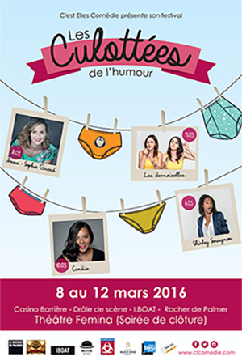

LE FESTIVAL LES CULOTTEES DE L'HUMOUR 2015
Dans le cadre des célébrations de la journée internationale de la femme le 8 mars, CL Comédie propose un festival d’humour sur 5 jours. Chaque soirée sera rythmée par un spectacle différent.
Pour la 1ère fois dans la région, des femmes issues de la scène parisienne mais aussi bordelaise vont investir différents lieux culturels de la Métropole Bordelaise : Le Rocher de Palmer, le Casino Théâtre Barrière, la Drôle de Scène, l'Iboat ainsi que le Fémina. En une semaine, le public va pourvoir découvrir plus de dix artistes.
Créé par des femmes et investi en grande partie (sauf le samedi soir) par la gente féminine, il s’agit d’un évènement pour tout le monde, qui se veut de mettre, non pas un humour féminin mais un humour AU féminin, ouvert à tous. Cette mixité se retrouvera lors de la soirée de clôture au Théâtre du Fémina où 3 artistes féminines partageront la scène avec 3 artistes masculins.
LES DATES DU FESTIVAL 2015

8 MARS ANNE-SOPHIE GIRARD
THEÂTRE CASINO BARRIERE DE BORDEAUX
Issue du Jamel Comedy Club et auteur de « La femme parfaite est une connasse », Anne-Sophie Girard c’est vous… Mais en pire ! Anne-Sophie Girard peut pleurer devant une frite, a la phobie des conseillers d’orientation et se méfie des filles qui portent « un manteau blanc ». Anne-Sophie Girard c’est votre meilleure copine, votre petite soeur, votre fantasme (pour 1,4% des internautes interrogés)
Le Saviez-vous?
Elle est issue du Jamel Comedy Club saison 5.
Anne-Sophie participe régulièrement à » Vendredi tout est permis » sur TF1

9 MARS LES DEMOISELLES
CAFE-THEÂTRE DRÔLE DE SCENE
Le 1er Spectacle Humoristique Solo joué en Duo… ou l’inverse! Ça y est ! Vous en avez rêvé dans vos fantasmes les plus fous, ces 2 comédiennes, tantôt amies, tantôt ennemies, arrivent sur scène pour un spectacle doublement délirant. Un duo pas comme les autres, frais et pétillant, de l’humour et de l’originalité qui vous surprendront…
Leur sens de l’observation est servi par des textes bien ciselés où les jeux de mots et les situations improbables fusent !
C’est sûr, vous ne verrez plus les choses de la même manière!
Alors n’ayez crainte si vous voyez double, Anne et Sophie, ces anciennes miss et 2ème dauphine 1999 de leur village nivernais (bon, ok il y avait 3 candidates…) vous feront tourner la tête !

10 MARS CANDIIE
L'IBOAT
Candiie a pleins d’envies et de projets…
Le problème c’est qu’elle a tendance à tout remettre à demain. Pareil pour sa croissance, sa déclaration d’impôt, son mariage, et ce qu’elle devrait faire … hier.
La seule chose qu’elle n’a pas remise à demain, c’est son spectacle.

11 MARS SHIRLEY SOUAGNON DANS FREE
ROCHER DE PALMER
Shirley Souagnon est humoriste. The Krooks, un trio Funk/Soul/ Jazz, et tous les 4 partagent une seule et même scène pour un spectacle drôle et funky! Après 7 années d’expérience sur la scène humoristique française, et un premier one woman show » Sketch Up » Shirley Souagnon revient dans ce tout nouveau spectacle mélangeant humour et musique : Free ! Accompagnée du band The Krooks, Shirley revient vous faire rire! De l’histoire du blues à M.Pokora, en passant par sa psy. De sa vie de maman à ses tournées avec le Jamel Comedy club, Shirley se livre et nous délivre. Un spectacle d’humour comme vous n’en avez jamais vu.

12 MARS SOIREEE DE CLÔTURE
THEÂTRE FEMINA
Pour la clôture de cette semaine riche en évènements, le Théâtre Fémina accueille les 3 dernières artistes du Festival : la brillante stand-upeuse Candiie, connue dans la Métropole bordelaise grâce aux succès des soirées Sois Belle Et Tais Toi Pas, le talentueux duo bordelais des Demoiselles, et enfin la pétillante et dynamique Marina Izarra. Exceptionnellement, pour fêter cette 1ère édition des Culottées de l’humour, les filles partagent la scène avec la gente masculine. Les privilégiés ne sont autres que le séduisant, drôle et caustique Tom Villa, le spécialiste de l’auto-dérision Guillaume Bats Officiel qui se sert de son handicap comme d’une arme du rire, enfin, un artiste complet qui est toujours prêt pour faire le show : Yann Stotz
NOS PARTENAIRES


 Devenir partenaire de la prochaine édition
Devenir partenaire de la prochaine édition